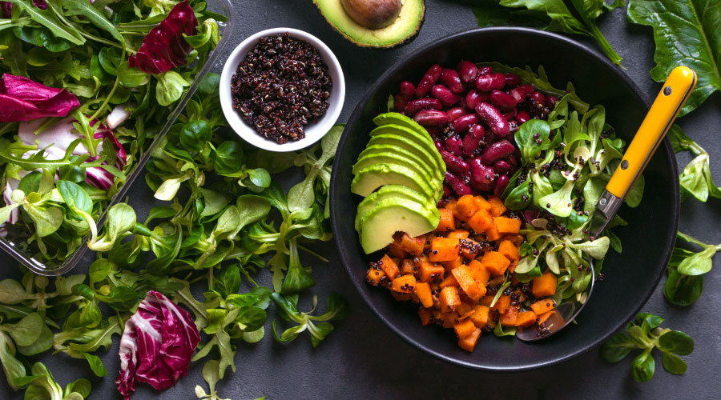

Health Tips and Recommendations
Dietary Tips
Maintaining a balanced diet is essential for overall health and well-being. A well-rounded diet not only helps in managing weight but also provides the necessary nutrients to fuel your body. Aim to include a variety of food groups in your daily meals, focusing on whole, minimally processed options.
- Fruits and Vegetables: Aim for at least five servings of fruits and vegetables each day. These foods are rich in vitamins, minerals, and antioxidants that help protect against chronic diseases.
- Lean Proteins: Incorporate sources of lean protein to support muscle health and repair. Options include chicken breast, turkey, fish, legumes (like lentils and chickpeas), and low-fat dairy products.
- Whole Grains: Choose whole grains over refined grains. Foods like quinoa, brown rice, oats, and whole grain bread provide fiber, which aids in digestion and keeps you feeling full longer.
- Healthy Fats: Include sources of healthy fats, such as avocados, nuts, seeds, and olive oil. These fats are essential for brain health and can help reduce inflammation.
- Hydration: Drink plenty of water throughout the day. Proper hydration is crucial for digestion, metabolism, and overall health. Aim for at least 8 glasses (2 liters) daily, adjusting based on your activity level and climate.
- Limit Processed Foods: Try to minimize your intake of processed and sugary foods. These often contain unhealthy fats, sugars, and additives that can lead to health issues.
- Portion Control: Pay attention to portion sizes. Using smaller plates and serving dishes can help prevent overeating. Listen to your body's hunger cues and stop eating when you're satisfied, not stuffed.
- Mindful Eating: Practice mindful eating by slowing down and savoring each bite. This can help you enjoy your meals more and recognize when you are full.
Suggested Foods:
- Fresh vegetables: spinach, broccoli, carrots, bell peppers, kale.
- Lean proteins: chicken breast, tofu, fish (like salmon and mackerel), beans, eggs.
- Whole grains: quinoa, brown rice, oats, barley, whole wheat bread.
- Fruits: berries (strawberries, blueberries, raspberries), apples, oranges, bananas, grapes.
- Healthy fats: avocados, almonds, walnuts, chia seeds, olive oil.
Additional Tips:
- Meal Prep: Consider preparing meals in advance to save time and ensure you have healthy options readily available.
- Cooking Methods: Opt for healthier cooking methods such as grilling, steaming, baking, or sautéing instead of frying.
- Experiment with Spices: Use herbs and spices to enhance the flavor of your meals without adding extra salt or sugar.
By incorporating these dietary tips and focusing on whole foods, you can enhance your health and well-being while enjoying delicious meals.
Exercise Routines

Engaging in regular physical activity is crucial for maintaining a healthy lifestyle. Aim for at least 30 minutes of exercise daily. This can include a mix of strength training and cardiovascular exercises. Consider activities like running, swimming, cycling, or group fitness classes to keep things interesting. Don't forget to incorporate flexibility and balance exercises, such as yoga or Pilates, into your routine.
Key Components of an Effective Exercise Routine:
- Warm-Up: Start every workout with a warm-up to prepare your muscles and joints. This could include dynamic stretches or light cardio.
- Strength Training: Incorporate strength training exercises at least twice a week. Focus on major muscle groups using bodyweight exercises, resistance bands, or weights.
- Cardiovascular Exercise: Include activities that raise your heart rate. Aim for at least 150 minutes of moderate aerobic activity or 75 minutes of vigorous activity per week.
- Flexibility and Cool Down: End your workout with stretching exercises to improve flexibility and help prevent injury.
Pre-Workout Snacks:
- Banana with peanut butter
- Greek yogurt with berries
- Oatmeal with a dash of honey
- Rice cakes with almond butter
- Whole grain toast with avocado
Post-Workout Meals:
- Grilled chicken with sweet potatoes
- Protein smoothie with spinach and banana
- Quinoa salad with mixed vegetables and chickpeas
- Egg omelet with spinach and tomatoes
- Brown rice with stir-fried vegetables and tofu
Additional Exercise Tips:
- Stay Consistent: Make exercise a regular part of your daily routine. Find activities you enjoy to help you stick with it.
- Listen to Your Body: Pay attention to how your body feels during workouts. Rest when needed and don’t push through pain.
- Set Realistic Goals: Start with achievable goals and gradually increase intensity, duration, and frequency to avoid burnout.
By following a well-rounded exercise routine and fueling your body with the right nutrients, you can achieve your fitness goals and enhance your overall well-being.
Hydration Tips
Staying hydrated is essential for maintaining optimal health. Aim to drink at least 8 glasses of water per day, but adjust this amount based on your activity level and the weather. If you're exercising or in a hot climate, you may need to increase your intake. Hydration helps regulate body temperature, keeps joints lubricated, and delivers nutrients to cells.
Tips for Staying Hydrated:
- Keep a water bottle with you throughout the day.
- Set reminders to drink water if you often forget.
- Infuse your water with fruits or herbs for added flavor.
- Start your day with a glass of water.
Hydrating Foods:
- Cucumber
- Watermelon
- Oranges
- Celery
- Strawberries
- Zucchini
Sleep Guidelines
Quality sleep is vital for overall health and well-being. Aim for 7-9 hours of sleep each night to allow your body to recover and rejuvenate. Establish a consistent sleep schedule by going to bed and waking up at the same time every day. Create a calming bedtime routine that may include reading, meditation, or gentle stretches.
Tips for Better Sleep:
- Limit screen time at least an hour before bed.
- Create a dark, quiet, and cool sleep environment.
- Avoid large meals and caffeine close to bedtime.
- Consider relaxation techniques like deep breathing or gentle yoga.
Foods that Promote Sleep:
- Chamomile tea
- Almonds
- Kiwi
- Warm milk with honey
- Oatmeal
- Fatty fish (like salmon)
Reminder:
Don't forget to schedule regular check-ups with your healthcare provider to monitor your health and adjust your routines as needed.